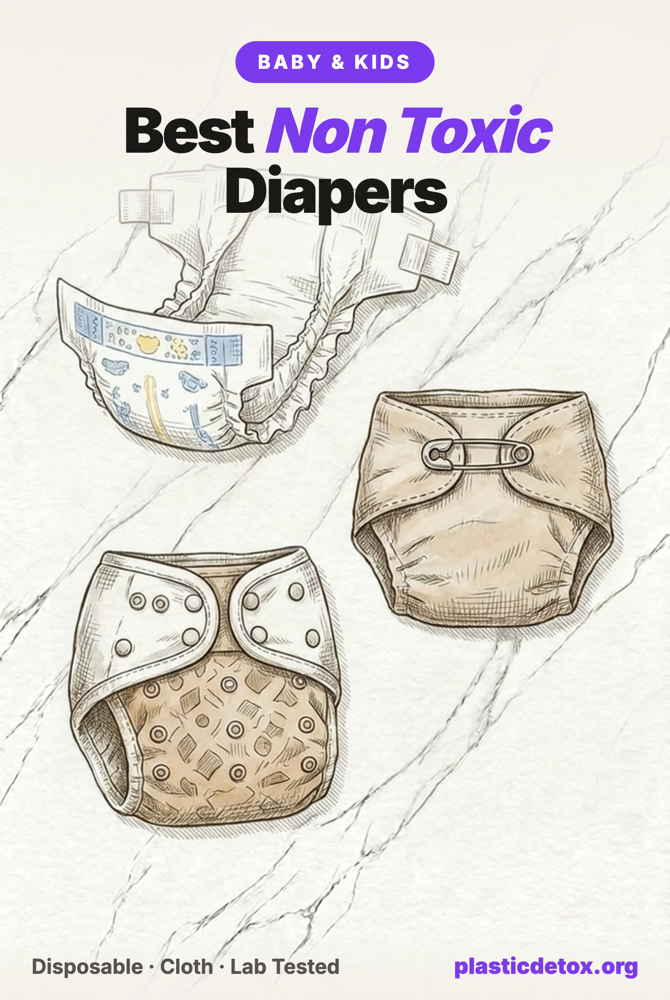

Best Non Toxic Diapers: What Tested Clean and What to Watch (2026)

The 30 Second Summary
- A baby wears 6,000 to 10,000 diapers before potty training, held against the thinnest, most permeable skin on the body, in a warm and wet environment, around the clock for two to three years. Almost nothing else in a child's life has that exposure profile.
- Independent 2023 testing found PFAS markers in 23 percent of diapers. An EPA certified lab commissioned by Mamavation screened 65 diapers from 40 brands and found organic fluorine in 17 percent of disposables and 30 percent of cloth diapers and accessories, at 10 to 323 ppm. Several detections were on brands sold as eco or natural.
- Best disposables, effectively tied: HealthyBaby and Coterie. Both are EWG Verified, both use totally chlorine free pulp, and both publish a full material list. Coterie absorbs more and is easier to buy; HealthyBaby costs a little less and uses organic cotton in the outer cover.
- Best budget and easiest to find: Seventh Generation Sensitive Skin, totally chlorine free, fragrance free, tested non detect, sold in ordinary grocery stores.
- Going reusable? Cloth actually had a higher detection rate than disposables, 30 percent versus 17 percent, and the problem sits in the waterproof cover rather than the absorbent layer. Build the system yourself: natural fiber prefolds and inserts, which tested clean almost across the board, under a cover from a brand that tested non detect.
- Watch the chlorine wording. Totally chlorine free means oxygen bleached. Elemental chlorine free means chlorine dioxide. Both get marketed as "chlorine free" and only one is actually chlorine free.
- Several clean looking brands need caution. Seven of them carry something a parent reading the packaging would never see: labeling class actions, rash complaint clusters, or fluorine detections on brands whose entire position is eco.
Diapers are the single highest contact plastic product in a baby's life. A child wears roughly 6,000 to 10,000 of them before potty training, each one pressed against the thinnest and most permeable skin on the body, in a sealed, warm, wet environment, for hours at a stretch, day and night, for two to three years. Those are precisely the conditions that accelerate chemical migration out of a material and into skin.
So it matters that the clean diaper aisle has become one of the most heavily marketed corners of the baby industry, and one of the least verifiable. Words like pure, natural, plant based, and chlorine free carry no legal definition. In the last few years, independent lab screening has found PFAS markers in diapers sold as eco friendly, a French regulator has documented dozens of contaminants across the category, and one of the fastest growing "clean" brands in the United States has picked up both a labeling class action and a cluster of chemical burn complaints.
This guide covers what the testing actually shows, which diapers we would buy, and, because it is the question we get asked most, which clean looking brands we would not put on a newborn right now. If you are building a whole nursery rather than just solving diapers, start with our non toxic baby registry and our review of the top 100 baby and kids products on Amazon, where every diaper brand below is rated alongside 99 other products parents actually buy.
1. Why Diapers Are a High Exposure Product
Exposure is not just about what a material contains. It is about dose, duration, and route. Diapers score badly on all three.
- Skin that absorbs more. Infant skin is thinner and more permeable than adult skin, and a baby's surface area to body weight ratio is roughly three times higher, so the same topical exposure delivers a proportionally larger internal dose.
- Occlusion. A diaper is a sealed system. Occluded skin absorbs substantially more of what touches it than open skin does, which is exactly why medicated patches are designed the way they are.
- Heat and moisture. Warmth and wetness both increase chemical migration out of plastics and increase skin permeability at the same time.
- Duration. Two to three years of near continuous contact during the developmental window when the endocrine and reproductive systems are still forming.
- The site. The diaper area includes some of the most absorbent skin on the body, including genital skin, which is a route of concern for endocrine disrupting chemicals specifically.
2. What Is Actually Inside a Disposable Diaper
Almost every disposable diaper on the market, clean brands included, is built from the same five layers. Knowing them makes marketing claims much easier to read.
| Layer | Usually made of | What to look for |
|---|---|---|
| Topsheet (touches skin) | Polypropylene nonwoven, sometimes part plant derived polyethylene | The layer that matters most. No lotion, no fragrance, no aloe or added softeners |
| Acquisition layer | Nonwoven synthetic | Rarely disclosed by any brand |
| Absorbent core | Fluff pulp plus superabsorbent polymer (sodium polyacrylate) | Totally chlorine free pulp, FSC sourced. Every disposable uses SAP |
| Backsheet | Polyethylene film | Plant derived polyethylene is a climate improvement, not a health one |
| Elastics, adhesives, inks | Synthetic rubber, hot melt adhesive, printed dyes | Latex free if allergy is a concern. Prints on the outer layer, not the topsheet |
Two honest points follow from that table. First, there is no such thing as a plastic free disposable diaper. Every one of them uses polymers somewhere, and any brand implying otherwise is overselling. Second, every disposable uses superabsorbent polymer. SAP replaced the ultra absorbent rayon fibers linked to toxic shock in the tampon era, and modern sodium polyacrylate is not considered acutely toxic. The realistic goal is not a diaper with no synthetics. It is a diaper with clean pulp, no fragrance, no lotion, no chlorine bleaching, and a brand willing to publish the whole material list.
3. What Independent Testing Found
PFAS markers in 23 percent of diapers tested
The most useful data set in this category comes from a 2023 investigation in which Mamavation commissioned an EPA certified laboratory to screen 65 diapers from 40 brands, purchased between February and August 2023. The lab measured total organic fluorine, a widely used screening marker for PFAS, with a detection threshold of 10 ppm.
- 23 percent of all products tested showed organic fluorine above the threshold.
- 17 percent of disposable diapers had a detection.
- 30 percent of cloth diapers and accessories had a detection, a higher rate than disposables.
- Results ranged from 10 ppm to 323 ppm, with the highest single figure on a hybrid cloth diaper cover.
Detections on the disposable side included Attitude Eco at 60 ppm inside, Happy Little Camper at 30 ppm inside, BabyCozy at 28 ppm outside, EcoPeaCo Bamboo at 28 ppm inside, Kirkland Signature at 26 ppm inside, Bambo Nature Dream at 18 and 22 ppm, Babyganics Skin Love at 12 ppm outside, and Rascal & Friends at 10 ppm outside. Several of those are brands parents buy specifically because they read as the clean option.
The French regulator findings
In January 2019 ANSES, the French agency for food, environmental, and occupational health safety, published an assessment that identified roughly 60 chemicals in disposable diapers, including glyphosate. It concluded that health reference values were exceeded for polycyclic aromatic hydrocarbons, dioxins, furans, and dioxin like PCBs, and flagged formaldehyde and certain fragrances as potentially unsafe. The contaminants came from raw material contamination and from the manufacturing process itself rather than from deliberate ingredients.
The follow up matters as much as the finding. Testing published in 2020 across 32 products showed a marked improvement: no results above the health limits, and no glyphosate detected. Three samples, including Pampers Premium Protection, still showed formaldehyde levels considered too high. ANSES has since proposed an EU wide restriction on hazardous chemicals in disposable diapers.
The fair reading is that regulatory pressure worked and the category is meaningfully cleaner than it was in 2019, while the mass market brands that were named remain the ones with the documented history. That history is why our top 100 review rates Pampers and Huggies as skip.
4. TCF vs ECF: The Word Game That Matters
If you learn one thing from this guide, make it this distinction. Diaper pulp has to be brightened, and there are two processes.
- Totally chlorine free (TCF). Bleached with oxygen, hydrogen peroxide, or ozone. No chlorine compounds at any stage. This is the clean process, and it is the one that avoids chlorinated dioxin byproducts entirely.
- Elemental chlorine free (ECF). Bleached with chlorine dioxide rather than elemental chlorine gas. It cuts dioxin formation dramatically compared to the old process, but it does not eliminate chlorinated byproducts, and it is not chlorine free in any plain reading of the phrase.
The overwhelming majority of diapers on the market, including many marketed as natural, use ECF pulp. Only a handful use TCF. And because "chlorine free" reads to a parent as "no chlorine," ECF brands routinely use that shorthand on packaging. This is the exact issue at the center of the Millie Moon class action described below.
5. Best Non Toxic Diapers
Four picks, ordered from lowest to highest price. Every one is fragrance free and lotion free, and every one either tested non detect for organic fluorine in the 2023 round or publishes third party PFAS testing of its own. None of them is plastic free, because no disposable diaper is.

Seventh Generation Sensitive Skin
Totally chlorine free wood pulp, no fragrance, lotion, or added dyes on the topsheet. Non detect for organic fluorine inside and outside in 2023 testing. Sold in ordinary grocery and drug stores, no subscription.
View →
DYPER Bamboo
Bamboo viscose core with a plant derived topsheet, USDA certified 55 percent biobased content, ASTM D6400 industrial compostability. No chlorine, fragrance, alcohol, PVC, or latex. Non detect in both 2023 screening and the brand's own Bureau Veritas PFAS testing.
View →
Coterie The Diaper
EWG Verified across every size from newborn to size 7 as of June 2026. Totally chlorine free pulp, full public ingredient list layer by layer, no fragrance, lotion, latex, parabens, or phthalates. Non detect for organic fluorine inside and outside. Highest absorbency in the group and the highest cost per diaper. Linked listing bundles newborn and size 1 diapers with wipes.
View →
HealthyBaby
The first EWG Verified diaper, screened against more than 3,900 chemicals of concern. Core is 40 percent FSC wood pulp, totally chlorine free, with no elemental chlorine or chlorine dioxide. Topsheet 50 percent plant derived polyethylene, outer cover 15 percent organic cotton. Tested for VOCs, pesticides, and heavy metals.
View →HealthyBaby or Coterie? They are closer than most guides admit
These two are usually presented as a clear hierarchy, and until recently there was one: HealthyBaby was the only EWG Verified diaper on the market. That changed on June 2, 2026, when Coterie's diaper was certified EWG Verified across every size from newborn to size 7, with no reformulation required. Both are now EWG Verified, both use totally chlorine free pulp, both publish a complete layer by layer material list, and both tested non detect for organic fluorine. On the criteria that actually matter for exposure, they are tied.
What separates them is preference, not safety:
- Coterie absorbs the most of anything in this group, which usually means fewer changes overnight, and it is the easier of the two to buy without a subscription. It is also the most expensive diaper here per unit.
- HealthyBaby runs a little cheaper, uses 15 percent organic cotton in the outer cover, and is microbiome tested. It leans harder on subscription delivery and offers fewer sizes.
We kept HealthyBaby in the best overall slot because it is slightly cheaper for a product you buy 3,000 times, and because it has held the certification longest. If your baby is a heavy overnight wetter, buy Coterie instead and do not feel you are trading anything away.
Two alternates worth knowing. Andy Pandy is an OEKO-TEX certified bamboo diaper that tested non detect and sits close to Seventh Generation on price, though Amazon size availability is inconsistent. Eco by Naty also uses totally chlorine free pulp and tested non detect, and is the easiest clean brand to buy in Europe, though US availability has thinned.
All four picks and their wipe and diaper cream counterparts sit in the diapers section of our free non toxic baby registry, alongside the rest of the nursery.
6. Brands That Look Clean but Need Caution
These are not the obvious offenders. Every brand below is bought specifically because it reads as the clean choice, and each one has something in its record that a parent reading the packaging would never see. None of them has been recalled. In several cases the brand disputes the finding, and we say so. Our position is simply that when genuinely clean alternatives exist at similar prices, an unresolved question is a reason to pick something else.
Millie Moon
Millie Moon, made by Zuru and sold largely through Target, has become one of the most recommended clean diapers in parenting groups. It tested non detect for organic fluorine in 2023 and it is fragrance and lotion free, so the formula itself is not the issue. Two other things are.
First, a class action filed in Massachusetts alleges Target continued marketing the diapers as totally chlorine free after the pulp process changed to elemental chlorine free. That is exactly the TCF and ECF gap described above, and it is the kind of claim that only matters to the parents who chose the brand for that specific reason.
Second, and more serious, consumer law firms are reviewing a cluster of reports of severe rashes, welts, open wounds, and peeling skin in the diaper area, described by reviewing attorneys as consistent with chemical or contact burns. One firm reported reviewing roughly 50 parent complaints from across the country since January 2026, at least one complaint has been filed with the Consumer Product Safety Commission, and the reports drew local television coverage in May 2026. A separate firm has opened an investigation into potential class claims against Zuru.
Where that leaves it: allegations, not findings. No recall, no liability determination, no independent lab result explaining the reactions. But an active complaint cluster on a product worn against broken skin is not something we are willing to wave through, so Millie Moon is marked use carefully in our Brand Check tool rather than listed as a pick.
The Honest Company
Honest diapers tested non detect for organic fluorine, inside and outside, in the 2023 round. We want to be direct about this: our own top 100 review previously described PFAS indicators in Honest diapers, and that was wrong. It has been corrected.
What is on the record is a long run of marketing litigation. Multiple class actions have alleged that Honest labeled household and personal care products as natural, all natural, naturally derived, or plant based while they contained synthetic ingredients, and those claims resolved in a settlement in which the company admitted no fault and continues to deny the allegations. A separate line of litigation alleges the diapers caused skin irritation and allergic reactions despite gentle and hypoallergenic marketing, and as of 2026 that matter has not reached a final settlement.
Where that leaves it: a reasonable mainstream option on materials, and a brand whose marketing language has repeatedly been found unreliable enough to litigate. Read its ingredient lists, not its adjectives.
Kudos
Kudos is the cotton lined diaper that many parents move to precisely to avoid a plastic topsheet, and it holds OEKO-TEX Standard 100 certification. In the 2023 screening its size 4 diaper returned the highest disposable result in the round, 48 and 16 ppm inside and 53 and 19 ppm outside, while its size 5 diaper, made from the same materials, returned non detect.
Kudos disputed the result and sent size 4 diapers to Vartest, an independent laboratory, which reported no detectable PFAS in December 2023. The company argues that total organic fluorine screening is susceptible to cross contamination during shipping and storage, that two samples is not a statistically meaningful sample, and that the size to size inconsistency points to a methodology problem.
Where that leaves it: genuinely unresolved. The internal inconsistency in the original result is a fair criticism, and the follow up testing is real. We would not call Kudos contaminated. We also would not put it in the picks list while two labs disagree.
Bambo Nature
Bambo Nature is the Danish brand with the Nordic Swan Ecolabel that has been the default recommendation in low tox circles for a decade. Its Dream diaper returned 18 ppm inside and 22 ppm outside in the 2023 screening. Those are modest numbers next to the 323 ppm found on a cloth cover, and an ecolabel governs environmental criteria rather than fluorine content, so the two facts are not contradictory. But it does mean the reputation is doing more work than the testing supports.
In fairness, the rest of the record is strong: Asthma Allergy Nordic, OEKO-TEX Standard 100, EU Ecolabel, and FSC pulp, no fragrance or lotion, no recall or litigation we could find, and the brand states its pulp is totally chlorine free, which most of the market cannot say. Bambo does not publish its own PFAS testing, so there is nothing to set against the detection. Note also that Bambo sells a Dream collection alongside its classic line and uses the word premium in the titles of both, so a listing name will not tell you which one you are holding. The allergy certifications make it worth considering for reactive skin; otherwise Seventh Generation is totally chlorine free, tested non detect, and cheaper.
Pampers Pure and other "pure" line extensions
Pampers Pure disposables tested non detect, which is worth acknowledging. The Pampers Pure hybrid cover, however, returned 158 ppm, one of the highest results in the whole round. And the parent brand carries the ANSES record described above, including a Pampers Premium Protection sample still flagged for formaldehyde in the 2020 follow up. A cleaner sub brand sitting inside a company with that history is not the same thing as a clean brand.
Eco branded disposables with detections
Several brands whose entire market position is eco or natural returned detections in 2023: Attitude Eco at 60 ppm inside, Happy Little Camper at 30 ppm inside, EcoPeaCo Bamboo at 28 and 12 ppm, BabyCozy at 28 ppm outside, Babyganics Skin Love at 12 ppm outside, and Rascal & Friends at 10 ppm outside. Costco's Kirkland Signature, which is not marketed as eco but is a common value default, returned 26 ppm inside. None of these brands is a villain, and a single screening round is not a verdict. But if you chose one of them for its green credentials specifically, that is the thing the testing did not support.
Hello Bello
Hello Bello tested non detect and remains a reasonable budget option. The caveat is corporate rather than chemical: the company filed for Chapter 11 in October 2023 and was acquired by a private equity firm in a deal valued at roughly $65 million. Ownership and manufacturing changes are a normal moment for formulations and suppliers to shift quietly, so treat pre 2024 reviews and testing as historical rather than current.
7. Cloth and Reusable Diapers
Cloth is the obvious answer to a disposable problem, and for the absorbent layer it genuinely is. What the 2023 testing showed is that the cloth category as a whole had a higher detection rate than disposables, 30 percent versus 17 percent, and that the detections clustered in one specific place: the waterproof outer layer.
- Covers and all in ones carried the highest numbers in the entire investigation. A GroVia hybrid cover returned 323 ppm, a Bambino Mio Miosolo all in one returned 174 ppm, and a Charlie Banana one size returned 19 ppm despite OEKO-TEX certification.
- Swim diapers were also high, with an Alvababy swim diaper at 173 ppm and a Charlie Banana swim diaper at 100 ppm. Water repellency is the functional requirement most likely to involve fluorinated chemistry, which makes this the least surprising result in the set.
- Natural fiber inserts and prefolds tested clean almost across the board. Thirsties Natural, Rumparooz, Bumgenius, Cloth-EEZ, EcoAble hemp inserts, and Pooters hemp all returned non detect. Two exceptions were minor: OsoCozy at 20 ppm and a Smart Bottoms newborn diaper at 11 ppm.
Best reusable diaper picks
Buy the parts, not a bundle. The absorbent layer and the waterproof layer have completely different risk profiles, so buying them separately lets you put a tested clean fiber against the skin and choose the cover on its own merits. Ordered low to high price.

Cloth-eez Prefolds
Unbleached cotton prefolds from Green Mountain Diapers, sold direct. Non detect for organic fluorine in 2023 screening. Cheapest cost per change of any diapering system, sized newborn through toddler, and usable as burp cloths afterward.
View →
EcoAble Hemp Inserts
Four layer hemp and organic cotton doublers, non detect for organic fluorine. Hemp holds more per unit thickness than cotton or microfiber, which is what makes overnight cloth work. Fits pocket diapers and prefold systems.
View →
Rumparooz One Size Cover
Waterproof cover from Kanga Care, non detect for organic fluorine in the round where covers were the worst performing category. Double inner leg gussets, one size from 6 to 35 lbs, so roughly six covers cover the whole diapering period.
View →
Thirsties Natural All in One
Organic cotton and hemp absorbency sewn into the cover, so it goes on like a disposable with no folding or stuffing. Non detect for organic fluorine. Made in the USA. The pick if a caregiver or daycare needs cloth to be simple.
View →Two brands to note rather than buy. OsoCozy prefolds are a common budget recommendation but returned 20 ppm, so Cloth-eez is the better prefold. Esembly is a well made organic cotton system that appears in our baby registry, but it was not part of this testing round, so treat it as untested rather than cleared.
Cloth also carries a second consideration that is easy to forget: synthetic cover fabrics and microfiber inserts shed in the wash, which is the same mechanism we cover in microplastics in clothing and laundry. Natural fiber inserts sidestep that too.
8. How to Vet a Diaper Brand Yourself
Brands change, testing rounds age, and new labels appear constantly. Five checks, in order of how much they tell you.
- Find the full material list, layer by layer. Not a list of what the diaper is free from. A brand that publishes the topsheet, core, backsheet, elastics, and adhesives is a brand that has nothing to hide. A "free from" list is a marketing artifact.
- Check for TCF, spelled out. If the site only says chlorine free, it is almost certainly ECF.
- Look for a certification that audits materials, not intentions. EWG Verified and MADE SAFE review the actual formulation against hazard databases. OEKO-TEX Standard 100 tests for a defined substance list. Nordic Swan and similar ecolabels are primarily environmental, not toxicological.
- Search the brand name with the words lawsuit, recall, and CPSC. This is the step almost nobody does and the one that surfaces the most. Every caution above came from that search.
- Rule out fragrance, lotion, and prints on the topsheet. Aloe, "soft touch" lotion, and fragrance are added to the layer that touches skin, and none of them serves any function the baby needs.
You can shortcut steps two through four for any brand using our Brand Check tool, which now covers the diaper brands in this article along with several hundred others. For the wider nursery, the complete non toxic baby and toddler guide works through bottles, sleep, bath, and clothing on the same evidence standard, and Baby and Kids 101 is the shorter version if you are starting from zero.
9. Frequently Asked Questions
What is the most non toxic diaper brand?
Two brands are effectively tied at the top: HealthyBaby and Coterie. Both are EWG Verified, which means every material was screened against EWG's hazard database, both use totally chlorine free pulp, both publish a full layer by layer material list, and both tested non detect for PFAS markers in independent 2023 testing. Coterie absorbs more and is easier to buy without a subscription; HealthyBaby costs slightly less and uses organic cotton in the outer cover. If cost matters more than certification, Seventh Generation is totally chlorine free, fragrance free, tested non detect, and sold in ordinary grocery stores. For reusables, pair natural fiber prefolds or hemp inserts with a cover from a brand that tested non detect, because the waterproof cover is where cloth testing found problems.
Do diapers contain PFAS?
Some do. In 2023 an EPA certified laboratory commissioned by Mamavation tested 65 diapers from 40 brands for organic fluorine, a screening marker for PFAS. Twenty three percent of products showed organic fluorine above the 10 ppm detection threshold, including 17 percent of disposables and 30 percent of cloth diapers and accessories. Results ranged from 10 to 323 ppm. Organic fluorine is a marker rather than a per compound PFAS measurement, so a detection is a reason to ask questions rather than proof of a specific chemical.
What is the difference between totally chlorine free and elemental chlorine free diapers?
Totally chlorine free (TCF) pulp is bleached with oxygen, hydrogen peroxide, or ozone, with no chlorine compounds at any stage. Elemental chlorine free (ECF) pulp is bleached with chlorine dioxide, which sharply reduces dioxin formation compared to elemental chlorine gas but does not eliminate chlorinated byproducts. TCF is the cleaner process. The distinction matters because many brands market ECF pulp using the phrase chlorine free, which reads to most parents as TCF.
Are Millie Moon diapers safe?
Millie Moon tested non detect for PFAS markers in 2023 independent testing and is fragrance and lotion free, but two separate problems have accumulated. A class action filed in Massachusetts alleges Target continued marketing the diapers as totally chlorine free after the pulp process moved to elemental chlorine free. Separately, consumer law firms are reviewing a cluster of severe rash and chemical burn reports from parents, at least one complaint has been filed with the Consumer Product Safety Commission, and the reports drew local news coverage in May 2026. There has been no recall and no finding of liability, but that is enough uncertainty that we do not list Millie Moon as a clean pick.
Are cloth diapers less toxic than disposables?
Not automatically. The absorbent layer of a cloth diaper is usually cotton, hemp, or bamboo and is genuinely clean, but the waterproof outer cover is a laminated synthetic and that is where testing has found problems. In the 2023 round, 30 percent of cloth diapers and accessories showed organic fluorine, higher than the disposable rate, with the highest single result of 323 ppm on a hybrid cover. Natural fiber inserts and prefolds tested clean almost across the board, so the safest cloth setup pairs cotton or hemp inserts with a cover from a brand that tested non detect.
What chemicals were found in disposable diapers?
In January 2019 the French agency ANSES identified roughly 60 chemicals in disposable diapers, including glyphosate, and concluded that health reference values were exceeded for polycyclic aromatic hydrocarbons, dioxins, furans, and dioxin like PCBs, with formaldehyde and some fragrances also flagged. Follow up testing published in 2020 across 32 products found a marked improvement, with no results above health limits and no glyphosate detected, though three samples still showed formaldehyde levels considered too high. ANSES has since proposed an EU wide restriction on hazardous chemicals in disposable diapers.
Is superabsorbent polymer in diapers dangerous?
Sodium polyacrylate, the gel that shows up as small crystals when a diaper is soaked, is used in every disposable diaper including every clean brand. It is not considered acutely toxic and it replaced the ultra absorbent fibers associated with toxic shock syndrome in the 1980s tampon era. It is a synthetic polymer, so it is fair to want less of it in a landfill, but it is not the layer to worry about. The topsheet, the pulp bleaching, and any added fragrance or lotion matter more.
Related Articles
- The Non Toxic Baby Registry
141 vetted picks across feeding, sleep, diapers, bath, and travel. No sponsored placements. - Top 100 Baby and Kids Products on Amazon, Reviewed
The best selling baby products rated skip, use carefully, or good choice against the evidence. - The Complete Non Toxic Baby and Toddler Guide
Bottles, sleep, bath, clothing, and gear, category by category. - What Are PFAS?
Where forever chemicals come from, what they do, and how to cut your exposure. - Microplastics in Baby Food
How plastic gets into purees, pouches, and formula prep, and what to do instead.